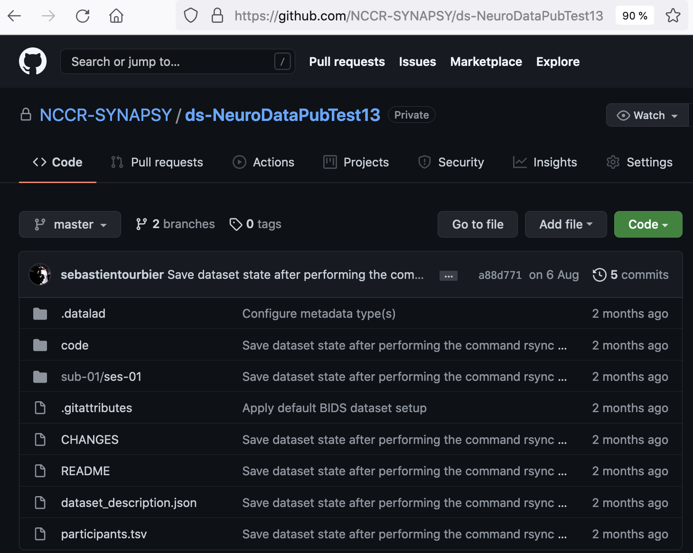

Standardization of Neuroimaging Data Management inside Synapsy
Annual Meeting 2021 in Les Diablerets, Switzerland
by Patric Hagmann and Sebastien Tourbier
14 October 2021


Keys of Synapsy Data Management Plan (DMP) for neuroimaging data
Implementation overview
BRAIN IMAGING DATA STRUCTURE (BIDS)

Dataset can be validated with bids-validator:
$ bids-validator "/media/localadmin/HagmannHDD/Seb/PsychoDev/NiftiBIDSCompliant" --ignoreSubjectConsistency
bids-validator@1.7.2
[...]
Summary: Available Tasks: Available Modalities:
9212 Files, 47.25GB rest MTR
346 - Subjects T1w
6 - Sessions T2map
dwi
bold
T1map
fieldmap
Datalad
$ git log
commit 336790df4aaa75eb49fc4a3a235d3058fdb3c4cd (ssh_horus/master, master, refs/basis/adjusted/master(unlocked))
Author: Sebastien Tourbier
Date: Mon Jul 12 11:09:23 2021 +0200
Update README and CHANGES
[...]
commit b8790bab140029c5f9acee6e7eab324c833b465e
Author: Sebastien Tourbier
Date: Fri Jul 9 07:36:14 2021 +0200
Initial upload with 346 subjects that pass bids-validator 1.7.2
$ datalad siblings
.: here(+) [git]
.: ssh_horus(+) [stockage-horus.chuv.ch:/********************/NiftiBIDSCompliant (git)]
DATASET CATALOG

Progress

Expected achievements w/r DMP
- By February 2022:
- DMP introduced for most of neuroimaging cohorts and fully implemented in a few.
- This will:
- Complete imaging data manager training
- Ease the sharing of Synapsy neuroimaging cohorts on open data repositories to fully satisfy SNSF FAIR research data requirements,
- Facilitate future collaborations between groups,
- Enable the analysis of Synapsy neuroimaging cohort with a collection of automated processing pipelines (https://bids-apps.neuroimaging.io/).
Perspectives beyond February 2022
- Complete the implementation of the DMP for all cohorts
- To fully exploit the catalog with the development of a search engine
- Requirements:
- Data manager resources in the laoratories
- Resources for coordination and IT support and implementation